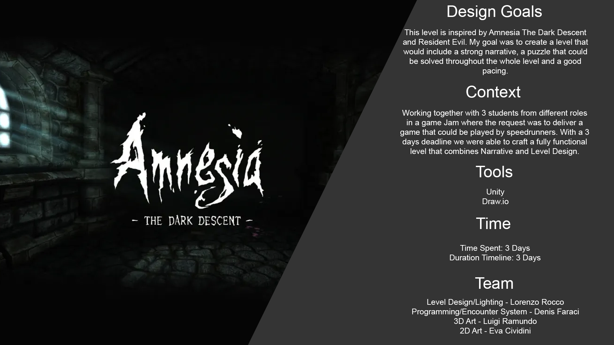
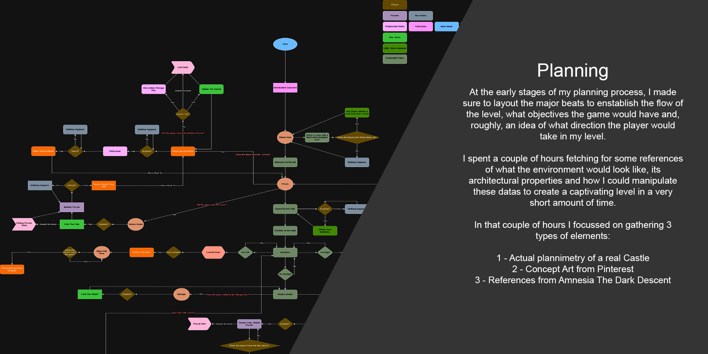
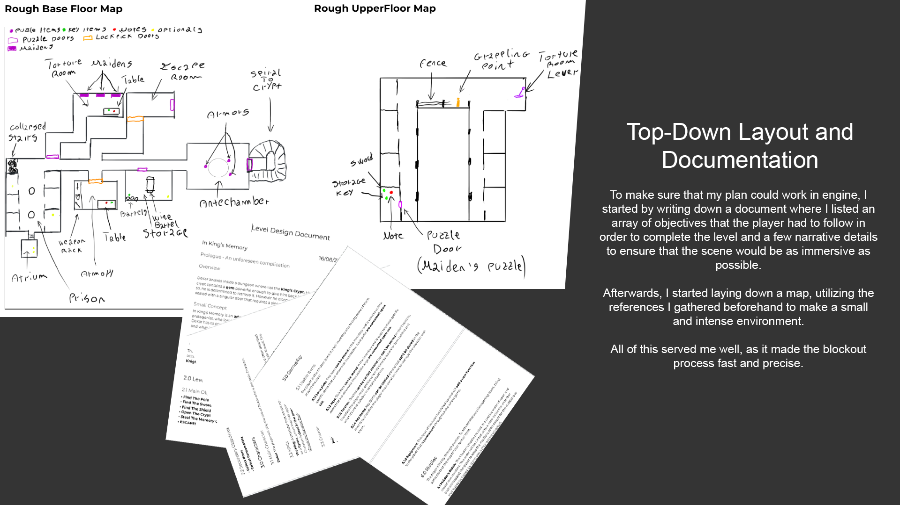
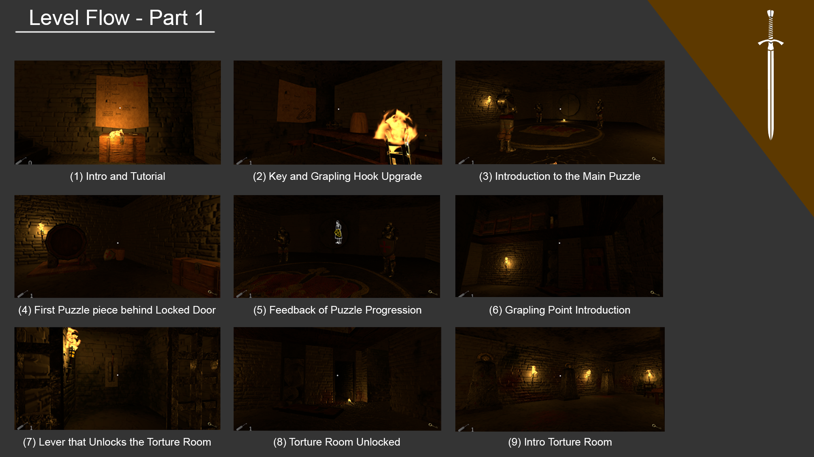
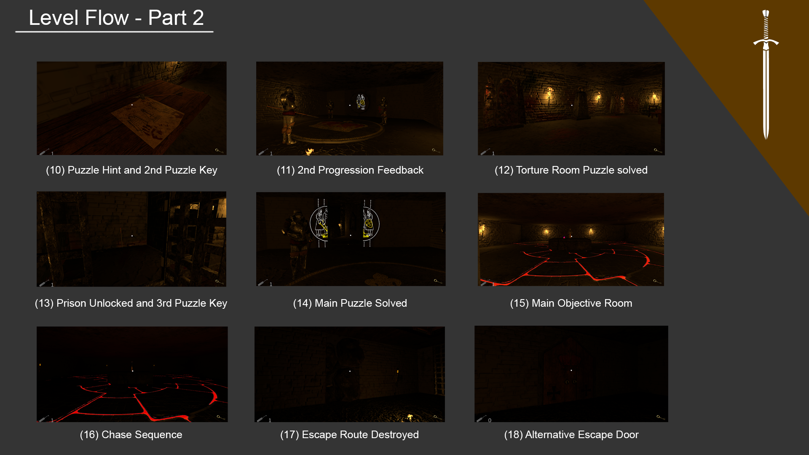
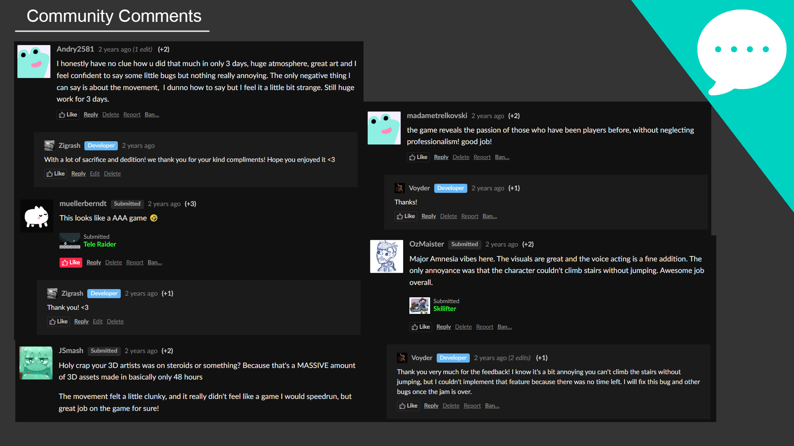
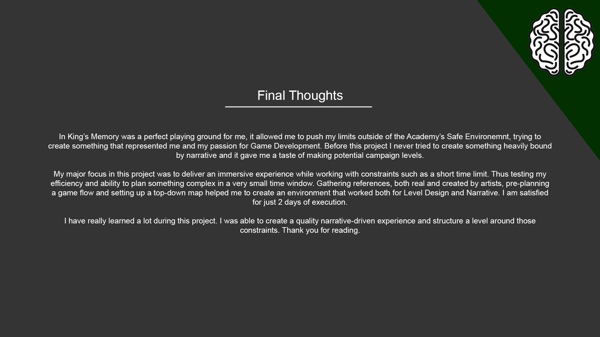

Trail + drawing: On
← Home Page
Lorenzo Rocco
Jams · PROJECT PROCESS
In King's Memory
Role
Level Designer / Lighting / VFX / Voice Actor
Team
4 people
Duration
2 days, 12 hours
Year
2023
Genre
Puzzle - Horror
Platform
PC
Watch
In King's Memory video
▶
Watch In King's Memory on YouTube
Watch on YouTube
View on itch.io
Project archive
Breakdown






